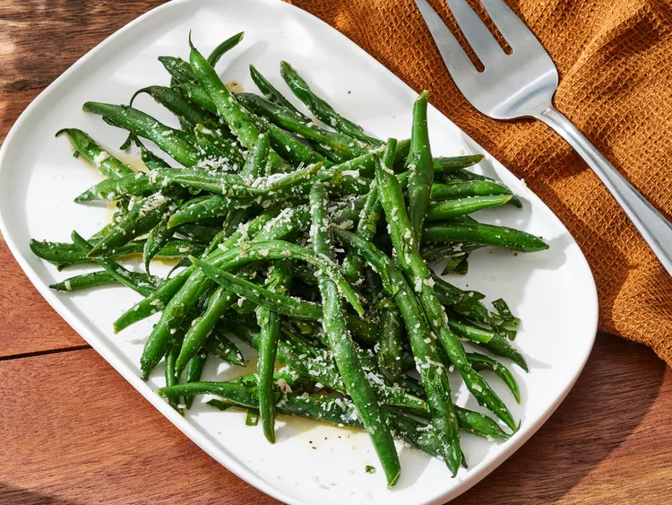

Odin Recipes
Broccoli and Cheese Casserole combine!
Broccoli and Cheddar are a match made in heaven, and they are the duo behind this indulgent cheesy casserole. Cream of mushroom soup and mayonnaise make for an extra velvety texture. Let the cheesy top layer get beautifully bubbly before you pull it from the oven.
Ingrediants
- Canned Soup
- Mayonnaise
- Egg
- Vegetables
- Cheese
- Seasonings
Steps
- Mix the soup, mayo, and egg together.
- Add the frozen broccoli and cheese.
- Transfer the mixture into a prepared baking dish.
- Bake in the preheated oven.

Garlic and Mushrooms combine!
These garlic mushrooms are easy to make by sautéing sliced mushrooms in butter with red wine. Delicious with grilled steaks or on top of toasted bread for a tasty appetizer.
Ingrediants
- 1 tablespoon butter
- 2 pounds sliced fresh mushrooms
- 4 cloves garlic, minced
- 1 teaspoon dried basil
- 1 cup red wine
Steps
- Heat butter in a skillet over medium heat. Add mushrooms and garlic; cook and stir until mushrooms are a light golden brown and liquid has evaporated, about 10 minutes. Stir in basil.
- Reduce heat to low, and pour wine into the skillet. Simmer until wine has mostly evaporated. Serve immediately.

Garden and Green Beans combine!
These flavorful steamed green beans are simply dressed for an easy side dish that practically cooks itself while you get the rest of the meal together.
Ingrediants
- 1 pound fresh Green Beans, trimmed.
- 3 tablespoons Olive Oil.
- 3 tablespoons freshly grated Parmesean Cheese.
- 2 tablespoons white wine vinegar
- 3 cloves garlic, sliced
- 1 pinch salt
- 1 pinch ground black pepper
- 2 tablespoons chopped fresh parsley.
Steps
- Gather all Ingrediants.
- Place a steamer insert into a saucepan and fill with water to just below the bottom of the steamer. Bring water to a boil. Add green beans, cover, and steam to your desired degree of tenderness, about 5 minutes.
- Transfer steamed green beans to a serving bowl. Add olive oil, Parmesan cheese, white wine vinegar, garlic, salt, and pepper; toss until evenly coated. Let stand for 10 minutes.
- Remove garlic slices and garnish with parsley before serving.
- Serve and enjoy!